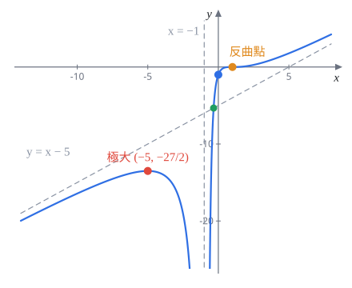
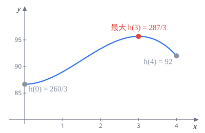

112 學年 微積分 1 期中考
模組 11–14 班，官方解答改寫成詳解
官方解答錯誤兩處，對照官方解答時請自己改正：
- 第 5(d) 題：說明 $x=-1$ 是垂直漸近線時寫成 $\displaystyle\lim_{x\to-2}f(x)=-\infty$，應為 $\displaystyle\lim_{x\to-1}f(x)=-\infty$。
- 第 7(a) 題：$\varepsilon(16)=-\frac{141}{1234}\approx-0.114$，官方寫「$\lt-1$」，應為 $\gt-1$。後面推 $R'(16)\gt0$ 正是靠 $1+\varepsilon(16)\gt0$，所以結論「漲價」沒錯。
每題下方灰字是對應的主題複習路線段號和講義小節，點進去可以回頭複習。標超出範圍的是講義沒教的工具，看懂就好。官方解答有用羅必達的地方，這裡都換成講義範圍內的做法（講義規定考試不能用羅必達）。
第 1 題 求極限（20%）
1(a)$\displaystyle\lim_{x\to0}|\sin x|\sin\left(\frac2x\right)$（5%）
主題 4 算極限的技巧｜§2.4 夾擠定理
考點：$\sin\frac2x$ 在 $0$ 附近一直振盪，極限不存在，不能拆開算。它是「有界」乘上「趨近 $0$」，用夾擠定理。
對 $x\neq0$，$-1\le\sin\frac2x\le1$，兩邊乘上 $|\sin x|\ge0$（乘非負數，不等號方向不變）：
$$-|\sin x|\le|\sin x|\sin\left(\frac2x\right)\le|\sin x|$$左右兩邊在 $x\to0$ 時都趨近 $0$，夾擠定理得
$0$
官方給分：用夾擠定理 1 分、寫對不等式 2 分、驗證兩邊極限 1 分、答案 1 分。只寫答案或說「振盪乘 0 等於 0」拿不到不等式那 2 分。
1(b)$\displaystyle\lim_{t\to0}\frac1t\left(\frac{1}{\sqrt{1+t}}-1\right)$（5%）
主題 4 算極限的技巧｜§2.3 有理化（講義週二題 18 的式子乘上 $-1$）
考點：直接代入是 $\frac10\cdot0$ 的不定型。先通分，再把分子有理化，約掉造成 $\frac00$ 的 $t$。
通分：
$$\frac1t\left(\frac{1}{\sqrt{1+t}}-1\right)=\frac{1-\sqrt{1+t}}{t\sqrt{1+t}}$$分子分母同乘 $1+\sqrt{1+t}$，分子變成 $1-(1+t)=-t$：
$$\frac{(1-\sqrt{1+t})(1+\sqrt{1+t})}{t\sqrt{1+t}\,(1+\sqrt{1+t})}=\frac{-t}{t\sqrt{1+t}\,(1+\sqrt{1+t})}=\frac{-1}{\sqrt{1+t}\,(1+\sqrt{1+t})}$$現在可以代 $t=0$：$\dfrac{-1}{1\cdot2}$。
$-\dfrac12$
更快的看法令 $g(t)=(1+t)^{-1/2}$，題目就是 $\displaystyle\lim_{t\to0}\frac{g(t)-g(0)}{t}=g'(0)$。$g'(t)=-\frac12(1+t)^{-3/2}$，$g'(0)=-\frac12$。看到「$\frac1h\bigl(f(a+h)-f(a)\bigr)$」的長相，先想導數定義（§4.1）。
1(c)$\displaystyle\lim_{x\to\infty}\frac{x^2+2e^{-x}}{e^{-x}+3e^x}$ 與 $\displaystyle\lim_{x\to-\infty}\frac{x^2+2e^{-x}}{e^{-x}+3e^x}$（5%）
主題 5 無窮極限與漸近線｜§2.5 無窮遠處的極限
考點：無窮遠處的分式，分子分母同除「跑最快的那一項」。$x\to\infty$ 時 $e^x$ 最大，$x\to-\infty$ 時 $e^{-x}$ 最大，所以兩個方向要分開做。
會用到一個講義沒證明的事實超出範圍：指數成長比多項式快，
$$\lim_{x\to\infty}\frac{x^2}{e^x}=0$$官方用羅必達兩次證明。考試時直接引用通常可以接受，但最好寫出來是在用這件事。
$x\to\infty$：分子分母同除 $e^x$，
$$\frac{x^2e^{-x}+2e^{-2x}}{e^{-2x}+3}\;\longrightarrow\;\frac{0+0}{0+3}=0$$$x\to-\infty$：分子分母同除 $e^{-x}$，
$$\frac{x^2e^{x}+2}{1+3e^{2x}}\;\longrightarrow\;\frac{0+2}{1+0}=2$$其中 $x^2e^x$：令 $u=-x\to\infty$，$x^2e^x=\dfrac{u^2}{e^u}\to0$，用的是同一個事實。
$x\to\infty$ 時為 $0$；$x\to-\infty$ 時為 $2$
常見失分：先把分母的 $e^{-x}$ 當成 $0$ 丟掉、再算剩下的極限。官方說明這種「先算一部分再算全部」的寫法扣 3 分。正確做法是整個式子一起變形，最後各項同時取極限。
1(d)$\displaystyle\lim_{x\to1^+}x^{1/(x-1)}$（5%）
主題 11 對數微分與 $e$ 的極限｜§5.4 $e$ 的另一個定義
考點：底趨近 $1$、指數趨近 $\infty$，是 $1^\infty$ 型。取 $\ln$ 變成乘法，算完再取 $e$ 的次方。
取 $\ln$：
$$\ln\left(x^{1/(x-1)}\right)=\frac{\ln x}{x-1}$$這個極限其實是 $\ln$ 在 $x=1$ 的導數（因為 $\ln1=0$）：
$$\lim_{x\to1^+}\frac{\ln x-\ln1}{x-1}=(\ln x)'\Big|_{x=1}=\frac11=1$$$e^x$ 連續，極限可以搬進指數：$\displaystyle\lim x^{1/(x-1)}=e^{1}$。
$e$
更快的做法令 $h=x-1\to0^+$，$x^{1/(x-1)}=(1+h)^{1/h}$，這就是 $e$ 的定義（週五題 13 證明過的 $\lim_{h\to0}(1+h)^{1/h}=e$），一步得答案。
第 2 題 求導數（15%）
2(a)$f(x)=\tan^{-1}(\sqrt x)$，求 $f'(x)$。（5%）
主題 10 反三角導數｜§5.2 主題 9 連鎖律｜§4.8
考點：反正切的導數 $(\tan^{-1}u)'=\dfrac{1}{1+u^2}$，再乘上內層 $u=\sqrt x$ 的導數。
$$f'(x)=\frac{1}{1+(\sqrt x)^2}\cdot\frac{1}{2\sqrt x}=\frac{1}{1+x}\cdot\frac{1}{2\sqrt x}$$$f'(x)=\dfrac{1}{2\sqrt x\,(1+x)}$，$x\gt0$
容易漏掉的是 $\frac{1}{2\sqrt x}$ 這個連鎖律因子。官方給分 2 分是設內層函數，最後 1 分是把 $(\sqrt x)^2$ 化成 $x$。
2(b)已知 $x^4-4x^2+2y^4+xy=0$，求在 $(x,y)=(1,1)$ 的 $\dfrac{dy}{dx}$。（5%）
主題 10 隱微分｜§5.1
考點：隱微分。把 $y$ 看成 $x$ 的函數，兩邊對 $x$ 微分；含 $y$ 的項要多乘 $y'$，$xy$ 要用乘法法則。
$$4x^3-8x+8y^3y'+\bigl(y+xy'\bigr)=0$$直接代 $(1,1)$，不必先解出 $y'$ 的一般式：
$$4-8+8y'+1+y'=0\;\Longrightarrow\;9y'=3$$$\dfrac{dy}{dx}\Big|_{(1,1)}=\dfrac13$
可以順手檢查 $(1,1)$ 在曲線上：$1-4+2+1=0$。
2(c)$f(x)=x^{\sin x}$，求 $f'(x)$。（5%）
主題 11 對數微分｜§5.4.1
考點：底和指數都有 $x$，冪次法則和指數法則都不能用，要用對數微分法。
兩邊取 $\ln$（$x\gt0$）：$\ln f(x)=\sin x\cdot\ln x$。兩邊對 $x$ 微分，右邊用乘法法則：
$$\frac{f'(x)}{f(x)}=\cos x\ln x+\frac{\sin x}{x}$$$f'(x)=x^{\sin x}\left(\cos x\ln x+\dfrac{\sin x}{x}\right)$
常見錯誤是寫成 $\sin x\cdot x^{\sin x-1}$（把指數當常數）。
第 3 題 三角恆等式與極限（10%）
3(a)已知對 $x$ 不是 $\pi$ 的整數倍時，$\cos x\cdot\cos2x=\dfrac{\sin4x}{4\sin x}$。用這個恆等式（或其他方法）證明：對 $x$ 不是 $\frac\pi4$ 的整數倍時， $$\tan x+2\tan2x=\cot x-4\cot4x$$ （提示：用對數微分法微分已知恆等式。）（5%）
主題 11 對數微分｜§5.4.1 主題 9 連鎖律｜§4.8
考點：證明題。乘積和商取 $\ln$ 會變成和與差，微分後每一項都是「$\frac{(\cdot)'}{(\cdot)}$」，剛好就是 $\tan$、$\cot$。
先確認已知恆等式為什麼對：$\sin4x=2\sin2x\cos2x=4\sin x\cos x\cos2x$，兩邊除以 $4\sin x$ 就是。
關鍵一步：兩邊取 $\ln|\cdot|$（要加絕對值，因為 $\cos x$ 等可能是負的）：
$$\ln|\cos x|+\ln|\cos2x|=\ln|\sin4x|-\ln4-\ln|\sin x|$$兩邊對 $x$ 微分，用 $(\ln|u|)'=\dfrac{u'}{u}$ 和連鎖律：
$$\frac{-\sin x}{\cos x}+\frac{-2\sin2x}{\cos2x}=\frac{4\cos4x}{\sin4x}-\frac{\cos x}{\sin x}$$也就是 $-\tan x-2\tan2x=4\cot4x-\cot x$，移項得
$\tan x+2\tan2x=\cot x-4\cot4x$ ■
為什麼條件是「$x$ 不是 $\frac\pi4$ 的整數倍」：這時 $\cos x,\cos2x,\sin x,\sin4x$ 都不是 $0$，每個 $\ln$ 和每個 $\tan$、$\cot$ 都有定義。
官方給分：取 $\ln|\cdot|$ 1 分、微分正確 3 分、整理出結論 1 分。
常見失分：(1) 沒加絕對值就取 $\ln$；(2) 連鎖律漏乘 $2$、$4$；(3) 直接把要證的式子當已知，兩邊互推。
另解不想取 $\ln$ 也可以直接對已知恆等式用乘法和商法則，再兩邊除以 $\cos x\cos2x$（左邊）與 $\frac{\sin4x}{4\sin x}$（右邊，兩者相等）。取 $\ln$ 的好處是乘積直接拆開，計算量少很多。
3(b)求 $\displaystyle\lim_{x\to0}\frac{\cot x-4\cot4x}{x}$。（5%）
主題 4 算極限的技巧｜§2.3（同講義週二題 14 的 $\frac{\tan2x}{x}$）
考點：直接算是 $\frac{\infty-\infty}{0}$，很難處理。上一小題就是給你用的：把分子換成 $\tan$，變成熟悉的 $\frac{\tan x}{x}$ 型。
由 (a)，$x$ 靠近 $0$（但 $\neq0$）時
$$\frac{\cot x-4\cot4x}{x}=\frac{\tan x}{x}+2\cdot\frac{\tan2x}{x}$$而 $\dfrac{\tan x}{x}=\dfrac{\sin x}{x}\cdot\dfrac{1}{\cos x}\to1\cdot1=1$，$\dfrac{\tan2x}{x}=2\cdot\dfrac{\tan2x}{2x}\to2$。所以
$$\lim_{x\to0}\frac{\cot x-4\cot4x}{x}=1+2\cdot2$$$5$
官方另外兩種解法要連用三次羅必達，考試不能用，也不必學。
第 4 題 反函數的導數與不等式（12%）
$f(x)=2x^2+\ln x$，$x\gt0$。已知 $f$ 嚴格遞增，有反函數 $f^{-1}$。
4(a)求 $f'(1)$ 與 $(f^{-1})'(2)$。（提示：$f(1)=2$。）（5%）
主題 10 反函數定理｜§5.5
考點：反函數定理 $(f^{-1})'(b)=\dfrac{1}{f'(a)}$，其中 $f(a)=b$。不用解出 $f^{-1}$，關鍵是先找出「哪個 $a$ 會送到 $b=2$」。
$f'(x)=4x+\dfrac1x$，所以 $f'(1)=5$。
題目提示 $f(1)=2+\ln1=2$，也就是 $f^{-1}(2)=1$：
$$(f^{-1})'(2)=\frac{1}{f'\bigl(f^{-1}(2)\bigr)}=\frac{1}{f'(1)}$$$f'(1)=5$，$(f^{-1})'(2)=\dfrac15$
常見錯誤是寫成 $\frac{1}{f'(2)}$，代錯點。
4(b)用 $f^{-1}(y)$ 在 $y=2$ 的線性近似估計 $f^{-1}(2.06)$。（2%）
主題 12 線性近似｜§6.1
考點：線性近似 $L(y)=g(2)+g'(2)(y-2)$，這裡 $g=f^{-1}$，兩個值都在 (a) 算好了。
$$f^{-1}(2.06)\approx f^{-1}(2)+(f^{-1})'(2)\cdot0.06=1+\frac{0.06}{5}$$$f^{-1}(2.06)\approx1.012$
4(c)證明對所有 $x\ge1$，$2x^2\le f(x)\le2x^2+x$。（5%）
主題 13 均值定理與增減｜§6.3.2 用導數判斷增減
考點：證明題。兩個不等式扣掉 $2x^2$ 後分別是 $0\le\ln x$ 和 $\ln x\le x$。前者是 $\ln$ 遞增，後者要自己造一個函數，用「導數非負就遞增」證明。
左邊（1 分）：$\ln x$ 遞增，$x\ge1$ 時 $\ln x\ge\ln1=0$，所以 $f(x)=2x^2+\ln x\ge2x^2$。
右邊（4 分）：關鍵一步是令
$$g(x)=x-\ln x,\qquad g'(x)=1-\frac1x\ge0\quad(x\ge1)$$所以 $g$ 在 $[1,\infty)$ 遞增，$g(x)\ge g(1)=1\gt0$，即 $\ln x\lt x$。因此 $f(x)=2x^2+\ln x\le2x^2+x$。
得證 ■
官方給分（右邊 4 分）：算出 $g'\ge0$ 1 分、說明 $g$ 遞增 1 分、得到 $g(x)\ge g(1)\gt0$ 1 分、結論 1 分。
常見失分：只寫「$\ln x$ 長得比 $x$ 慢」或畫圖說明，沒有論證；或只算 $g'\ge0$ 卻沒和起點 $g(1)$ 比較。遞增只告訴你越來越大，要和起點的值比才知道正負。
第 5 題 函數作圖（22%）
$f(x)=\dfrac{(x-1)^3}{(x+1)^2}=x-5+\dfrac{12x+4}{(x+1)^2}$，$x\neq-1$。
解題套路題目已經給了長除法的結果，微分時用右邊的形式比較輕鬆：$x-5$ 的導數是 $1$，只要處理 $\frac{12x+4}{(x+1)^2}$。斜漸近線也直接看出來是 $y=x-5$。
5(a)求 $f'(x)$，寫出遞增與遞減區間。（7%）
考點：商法則求 $f'$，因式分解後列符號表。$(x-1)^2$ 這種平方因子不會變號，要特別注意。
商法則，分子提出公因式 $(x-1)^2(x+1)$：
$$f'(x)=\frac{3(x-1)^2(x+1)^2-(x-1)^3\cdot2(x+1)}{(x+1)^4}=\frac{(x-1)^2\bigl[3(x+1)-2(x-1)\bigr]}{(x+1)^3}=\frac{(x-1)^2(x+5)}{(x+1)^3}$$臨界點 $x=1,-5$；$x=-1$ 不在定義域但會讓符號改變。$(x-1)^2\ge0$ 不影響正負，只看 $(x+5)$ 和 $(x+1)^3$：
| 區間 | $x\lt-5$ | $(-5,-1)$ | $(-1,1)$ | $x\gt1$ |
|---|---|---|---|---|
| $x+5$ | $-$ | $+$ | $+$ | $+$ |
| $(x+1)^3$ | $-$ | $-$ | $+$ | $+$ |
| $f'$ | $+$ | $-$ | $+$ | $+$ |
$f'(x)=\dfrac{(x-1)^2(x+5)}{(x+1)^3}$；遞增 $(-\infty,-5)$、$(-1,\infty)$；遞減 $(-5,-1)$
$x=1$ 兩側都遞增，所以 $(-1,1)$ 和 $(1,\infty)$ 可以合成 $(-1,\infty)$。官方給分是四個區間各 1 分。
但 $(-\infty,-5)$ 和 $(-1,\infty)$ 中間隔著垂直漸近線，嚴格說不能用聯集寫成一個遞增區間：$-6\lt-0.9$，可是 $f(-6)\approx-13.7\gt f(-0.9)=-685.9$。官方寫成 $(-\infty,-5)\cup(-1,\infty)$，考試通常不扣分，自己寫時分開列比較保險。
5(b)求 $f''(x)$，寫出凹口向上與向下的區間。（7%）
主題 15 凹性｜§7.2
考點：二階導數的符號決定凹向。用長除法的形式算最快。
令 $u=\dfrac{12x+4}{(x+1)^2}$，則 $f=x-5+u$。
$$u'=\frac{12(x+1)^2-(12x+4)\cdot2(x+1)}{(x+1)^4}=\frac{12(x+1)-2(12x+4)}{(x+1)^3}=\frac{4-12x}{(x+1)^3}$$所以 $f'=1+\dfrac{4-12x}{(x+1)^3}$（和 (a) 通分後一致）。再微一次：
$$f''=u''=\frac{-12(x+1)^3-(4-12x)\cdot3(x+1)^2}{(x+1)^6}=\frac{-12(x+1)-3(4-12x)}{(x+1)^4}=\frac{24(x-1)}{(x+1)^4}$$分母 $(x+1)^4\gt0$，正負只看 $x-1$。
$f''(x)=\dfrac{24(x-1)}{(x+1)^4}$；凹口向上 $(1,\infty)$；凹口向下 $(-\infty,-1)$、$(-1,1)$
常見失分：寫成「凹口向下 $(-\infty,1)$」，沒有扣掉 $x=-1$，官方扣 0.5 分。
5(c)寫出局部極值與反曲點（若有）。（2%）
考點：一階導數由正變負是極大；臨界點兩側不變號就不是極值。凹向改變而且函數有定義的點才是反曲點。
$x=-5$：$f'$ 由 $+$ 變 $-$，局部極大，$f(-5)=\dfrac{(-6)^3}{(-4)^2}=-\dfrac{216}{16}=-\dfrac{27}2$。
$x=1$：$f'(1)=0$ 但兩側都是 $+$，不是極值。$f''$ 在這裡由負變正，而且 $f(1)=0$ 有定義，所以是反曲點，而且切線水平。
$x=-1$ 兩側凹向沒變，而且不在定義域，不是反曲點。
局部極大 $\left(-5,-\frac{27}2\right)$；沒有局部極小；反曲點 $(1,0)$
5(d)求所有漸近線。（3%）
考點：分母為 $0$、分子不為 $0$ 的點是垂直漸近線；長除法的商式是斜漸近線。
垂直：$x\to-1$ 時分子 $\to(-2)^3=-8$，分母 $(x+1)^2\to0^+$，所以兩側都 $f\to-\infty$。$x=-1$ 是垂直漸近線。
斜：$f(x)-(x-5)=\dfrac{12x+4}{(x+1)^2}$，分子一次、分母二次，$x\to\pm\infty$ 時 $\to0$。所以 $y=x-5$ 是兩端共用的斜漸近線。$f$ 往兩端都趨向 $\pm\infty$，沒有水平漸近線。
垂直漸近線 $x=-1$；斜漸近線 $y=x-5$（$x\to\pm\infty$ 都是）
不用長除法的標準算法：$a=\lim\frac{f(x)}{x}=1$，$b=\lim\bigl(f(x)-x\bigr)=\lim\frac{(x-1)^3-x(x+1)^2}{(x+1)^2}=\lim\frac{-5x^2+2x-1}{x^2+2x+1}=-5$。官方要求兩個方向都要提到，漏寫 $x\to-\infty$ 扣 0.5 分。
5(e)畫出 $y=f(x)$。（3%）
主題 16 函數作圖｜§7.3 DISPADDD
考點：把 (a)–(d) 的資訊畫在一起。截距和曲線與漸近線的相對位置可以讓圖更準。
截距：$f(0)=\frac{-1}{1}=-1$；$f=0\iff x=1$。
和斜漸近線比較：$f(x)-(x-5)=\dfrac{12x+4}{(x+1)^2}$，$x\gt-\frac13$ 時曲線在漸近線上方，$x\lt-\frac13$ 時在下方，在 $\left(-\frac13,-\frac{16}3\right)$ 穿過漸近線。

官方給分各 0.5 分：兩條漸近線、極大點、反曲點、$x\lt-1$、$-1\lt x\lt1$、$x\gt1$ 三段的形狀。
第 6 題 工廠產量最大化（9%）
早班 8:00 到 12:15，共 4 小時工作加 15 分鐘咖啡休息。休息前工作 $t$ 小時可組裝 $f(t)=-t^3+6t^2+15t$ 件；休息後工作 $t$ 小時可組裝 $g(t)=-\frac13t^3+t^2+23t$ 件。
6(a)休息前工作 $t$ 小時（$0\le t\le4$），寫出整個早班的總產量。（3%）
主題 1 函數｜§1.1
考點：把文字翻成函數。休息後剩 $4-t$ 小時，所以休息後的產量是 $g(4-t)$。
$$h(t)=f(t)+g(4-t)=-t^3+6t^2+15t-\frac13(4-t)^3+(4-t)^2+23(4-t)$$$h(t)=f(t)+g(4-t)$，$0\le t\le4$（如上，不必展開）
6(b)休息前應工作幾小時，才能讓總產量最大？要說明確實是全域最大。（6%）
主題 14 極值｜§7.1 閉區間上的最大最小值（應用題情境講義沒有，數學工具在範圍內）
考點：閉區間 $[0,4]$ 上的全域最大值。找臨界點，再和端點比大小。
微分 $g(4-t)$ 要用連鎖律，內層 $4-t$ 的導數是 $-1$：
$$h'(t)=f'(t)-g'(4-t)=(-3t^2+12t+15)-\bigl(-(4-t)^2+2(4-t)+23\bigr)$$展開整理：$(4-t)^2-2(4-t)=t^2-6t+8$，所以
$$h'(t)=-3t^2+12t+15+t^2-6t+8-23=-2t^2+6t=-2t(t-3)$$臨界點 $t=0,3$。比較候選點的值：
$$h(0)=g(4)=\frac{260}{3}\approx86.7,\qquad h(3)=f(3)+g(1)=72+\frac{71}{3}=\frac{287}{3}\approx95.7,\qquad h(4)=f(4)=92$$
休息前工作 $3$ 小時（8:00–11:00），總產量最大 $\frac{287}{3}\approx95.7$ 件
常見失分：(1) 微分 $g(4-t)$ 時漏了負號；(2) 只用二階導數判別 $h''(3)\lt0$，那只能說明是局部極大，官方只給 1 分。要嘛比較端點值，要嘛說明 $h'$ 在 $(0,3)$ 為正、$(3,4)$ 為負。
第 7 題 需求彈性（12%）
匯率 $q=5p$（$p$ 為千元台幣、$q$ 為千元日圓）。$Y(p)$ 是定價 $p$ 台幣時的需求量，$y(q)$ 是定價 $q$ 日圓時的需求量。已知 $Y(p)=100+\dfrac{100}{\sqrt p}-\dfrac{p}{10}$，$1\le p\le100$。點彈性定義為 $\varepsilon(p)=\dfrac{Y'(p)\cdot p}{Y(p)}$。
7(a)求 $\varepsilon(16)$。在這個價格下，零售商要漲價還是降價才能提高營收 $p\cdot Y(p)$？（8%）
主題 8 微分法則｜§4.5 乘法法則 主題 13 增減｜§6.3.2
考點：彈性是題目定義的，只要照公式代。真正的問題是營收 $R(p)=pY(p)$ 在 $p=16$ 是遞增還是遞減，看 $R'(16)$ 的正負。
$Y'(p)=-50p^{-3/2}-\dfrac1{10}$，所以
$$Y'(16)=-\frac{50}{64}-\frac1{10}=-\frac{141}{160},\qquad Y(16)=100+25-1.6=123.4$$ $$\varepsilon(16)=\frac{-\frac{141}{160}\cdot16}{123.4}=\frac{-14.1}{123.4}=-\frac{141}{1234}\approx-0.114$$營收用乘法法則微分，提出 $Y(p)$：
$$R'(p)=Y(p)+pY'(p)=Y(p)\bigl(1+\varepsilon(p)\bigr)$$$Y(16)\gt0$，且 $1+\varepsilon(16)\approx0.886\gt0$，所以 $R'(16)\gt0$，營收在 $p=16$ 遞增。
$\varepsilon(16)=-\dfrac{141}{1234}\approx-0.114$；應該漲價
直覺：$|\varepsilon|\lt1$ 表示漲價 1% 需求只掉約 0.11%，賣少一點但每件貴很多，營收上升。官方說明沒有理由的結論不給分。
7(b)假設需求只由實際價值決定，下列哪個等式正確描述 $Y$ 與 $y$ 的關係？(A) $Y(5p)=y(p)$ (B) $5Y(p)=y(p)$ (C) $Y(p)=y(5p)$ (D) $Y(p)=5y(p)$（1%）
主題 1 函數｜§1.1
考點：讀懂函數的輸入是什麼。定價 $p$ 台幣和定價 $5p$ 日圓是同一個價錢，需求量相同，所以 $Y(p)=y(5p)$。
(C)
7(c)找出並證明台幣彈性 $\varepsilon(p)$ 與日圓彈性 $\varepsilon(q)=\dfrac{y'(q)\cdot q}{y(q)}$ 的關係。（3%）
主題 9 連鎖律｜§4.8
考點：對 $Y(p)=y(5p)$ 用連鎖律，再代進彈性的定義。
連鎖律：$Y'(p)=5y'(5p)$。代入，並用 $q=5p$（所以 $p=\frac q5$）：
$$\varepsilon(p)=\frac{Y'(p)\cdot p}{Y(p)}=\frac{5y'(5p)\cdot\frac q5}{y(5p)}=\frac{y'(q)\cdot q}{y(q)}=\varepsilon(q)$$$\varepsilon(p)=\varepsilon(q)$：彈性和用哪種貨幣計價無關
官方給分：連鎖律 1 分、換成 $y$ 和 $y'$ 1 分、結論 1 分。